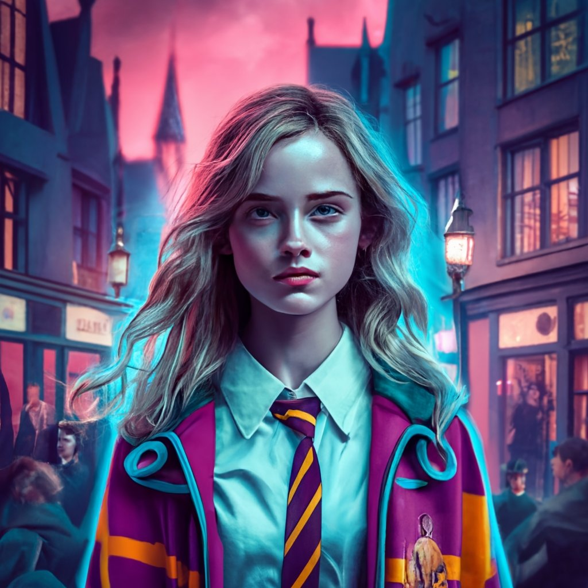

Hermione Jane Grainger was born on September 19, 1979. Hermione first appeared in Harry Potter and the Philosopher's Stone (1997)
as a student on the Hogwarts Express on her way to school.
She became best friends with Harry and Ron after the latter saved her from a mountain troll in the girls' bathroom. She usually uses her intelligence, quick wit, and extensive knowledge to provide assistance and support in critical situations. Hermione is considered one of the smartest Hogwarts students ever. She is extremely accomplished and ambitious, which has led to her being able to help her two best friends in many of the problems and adventures they face throughout the events of the series, even though... She always expresses her anger at their foolish actions that lead them to these adventures. When she placed the coordination hat on her head, the hat was very confused between placing Hermione in the Ravenclaw house due to her extreme intelligence and
the Gryffindor house, but she chose Gryffindor in the end, and Hermione's will may have an influence on the choice of the hat.